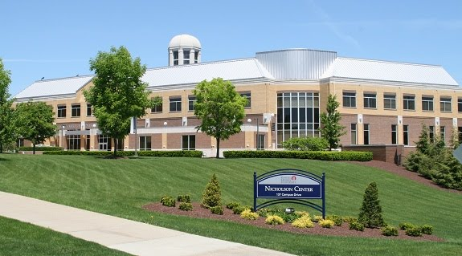

Built in 1999, the 78,000 square foot, four-level Edward A. Nicholson Student Center provides a gathering place for students, faculty, staff, alumni, and visitors. It embodies the traditions, expectations and spirit of the campus and, thus, serves as an integral part of every student's collegiate experience.
